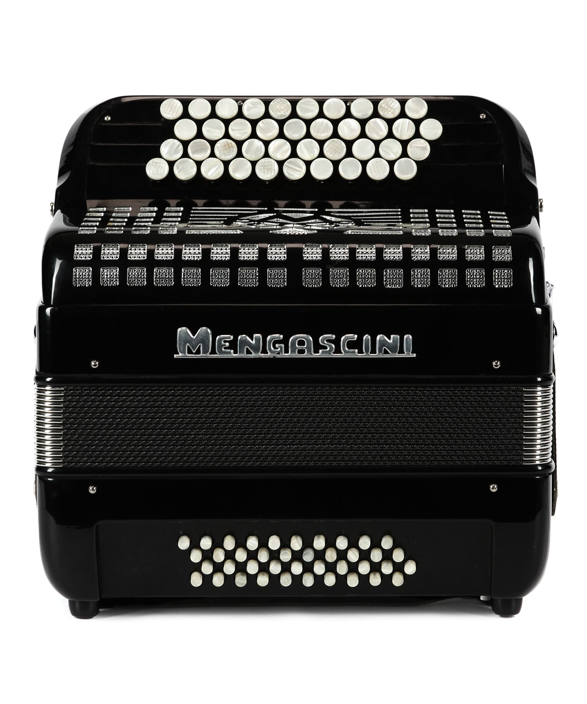

🔵 Midi-Bayan

Подключиться
🎛️ Меню
⚙️ Настройки
🔊 Аудио
🎹 Стиль
Отключиться
⚙️ Настройки
← Назад
Канал:
Мелодия
Аккорд
Бас
Инструмент
Громкость
100
Октава
−
0
+
Сохранить
🔊 Аудио
← Назад
Громкость
100
Реверб
0
Хорус
0
Дилей
0
🎹 Стиль
← Назад
Стиль
Pop
Rock
Disco
Waltz
▶ Пуск
🎵 Темп
Темп:
—
BPM